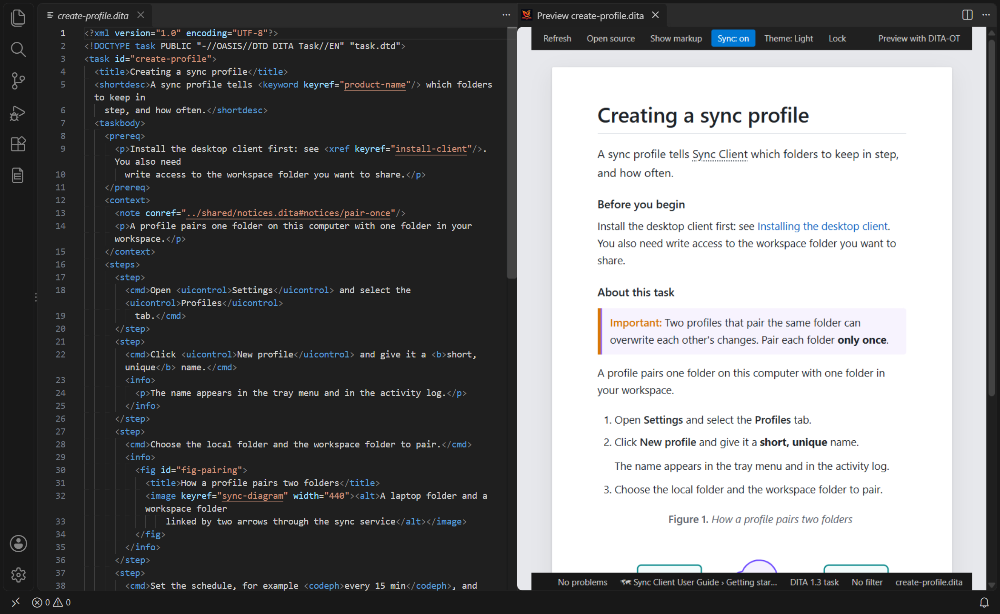

Visual Preview
A live page of the topic beside its source, rendered by DITA Craft itself as you type, with keys, reuse and link titles resolved.
Opening the Visual Preview

Open a topic and run DITA: Preview, press Ctrl+Shift+H, or click the preview icon in the editor title bar. The preview opens beside the editor and follows the active DITA editor; click Lock in its toolbar (or run DITA: Preview — Lock/Unlock to This Topic) to keep it on one topic.
What the Page Shows
- Structure: headings at the right level, short description, sections, examples and nested topics
- Notes: labelled, coloured boxes for every note type and hazard statements
- Tasks: numbered steps and substeps, labelled sections ("Before you begin"…)
- Tables: CALS and simple tables with spans, column widths, frames and numbered captions
- Figures and images: numbered captions; images sized and aligned by their attributes
- Code: code blocks and other preformatted blocks, whitespace kept
- Footnotes numbered in reading order, related links, MathML and SVG
Labels follow VS Code's display language (English and French).
Resolved References
The preview resolves references the way an output would, using DITA Craft's key space:
keyrefon phrases, keywords and terms: the key's text, with a dotted underline (hover for the key);conrefandconkeyref: the reused element, withconrefendranges, nested and chained reuse;- empty
xrefandlink: the target's title; - glossary terms,
coderef,mathmlref,svgref, and images byhreforkeyref.
What cannot be resolved shows a [key] placeholder with the reason on
hover. References are resolved again when a reused file or a map changes, and on
save.
Working with the Page
- Scroll sync
- Scrolling the editor scrolls the page to the same element, and the other way
round; clicking the page moves the editor cursor there. Toggle it with
Sync in the toolbar or
ditacraft.previewScrollSync. - Ctrl+click
- Opens a link's target, reused content's source, or jumps to any other element in the editor.
- Problems
- Elements with diagnostics are underlined; the status line shows the count — click it to step through them.
- Show markup
- Reveals what a published page does not show: prolog metadata, comments,
processing instructions, index terms,
dataand draft comments. - Broken XML
- While the XML is not well-formed, the page keeps the last good rendering and a banner shows the error — click it to go to the line.
Conditions (DITAVAL)
DITA: Set Preview DITAVAL Filter filters the page through a
.ditaval file: excluded content is removed (or dimmed, with
ditacraft.previewShowExcluded) and flagged content gets the
flag's colour, style and start and end flags. The status line names the filter. The
text editor marks the same elements (see Condition Highlighting in the Editor).
![On the left, a task in the text editor with a DITAVAL filter: the macOS and Linux steps are dimmed and struck through; the administrators' step is flagged [Admin] in blue italics, a step for another product is flagged [Check] in orange by the filter's rule for unnamed conditions, and a step of revision 2.0 is flagged [New in 2.0] in green bold. On the right, the visual preview of the same task shows the Windows step and the same flags, without the excluded steps; its status line names the filter.](../../images/condition-highlighting.png)
Styling the Page
The page uses the DITA-OT HTML5 class names (.note,
.codeblock, .topictitle1…), so a stylesheet
written for DITA-OT output styles it too. Point
ditacraft.previewCustomCss at it. Every element also carries
data-dita (its name) and data-class (its DITA
class), so a rule can target a specialization family:
[data-class~="topic/note"].
Limitations
- Custom DITA-OT plugins and PDF-specific formatting are not applied; use the DITA-OT preview or publish for the final review.
- In Restricted Mode, custom CSS and the project catalog are not used, and only the topic's own workspace folder is read.